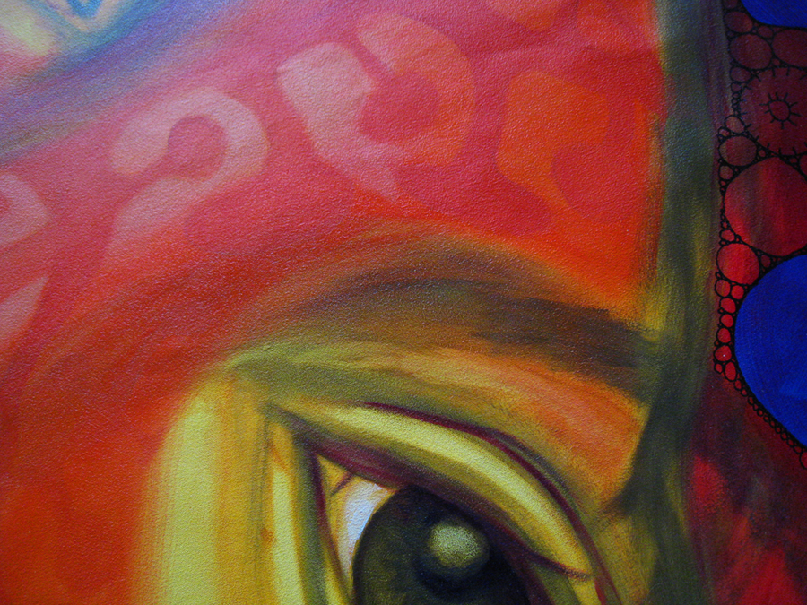

2010 Exhibitions
2011 Exhibitions
Future Exhibitions
Artists
February 3-24 2012
James Paradis
Merill Comeau
March 2-22 2012
Dominic Chavez
Silvia Lopez Chavez
April 6-27 2012
tba
May 4-25 2012
Richard Neal
June 1-22 2012
June 28- July 20 2012